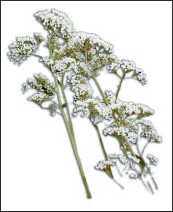
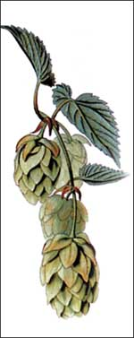

Gentle, soothing herbs deliver restful slumber.
Sleep is essential to optimal health, helping our bodies and minds to recharge, re-energize and successfully navigate the day’s activities. The amount of sleep needed for a person to best function varies among individuals, with eight hours being the average. It is said that Thomas Edison thrived on only four hours of sleep each night, but that Albert Einstein required 12 hours for a good night’s rest.
But if there’s one thing we probably all have in common, it’s that we could use more sleep. With the stress of modern, busy lifestyles, it’s not uncommon to have a hard time falling asleep or getting enough rest. Sleep difficulty ranks third as a common complaint for individuals seeking medical advice, right behind headaches and the common cold. Each year, a third of Americans reportedly suffer at least occasional difficulty in falling asleep, and between 10 percent and 20 percent of the U.S. population has habitual or severe difficulty in falling asleep.
More women are affected by sleep disturbances than men, and, statistically, sleep disturbances are known to increase with age. With little or no treatment, sleep disturbances can evolve into an increased risk of physical and mental disorders such as depression.
When most of us think of problems associated with sleeping, the word “insomnia” often comes to mind. Insomnia refers specifically to difficulty falling asleep, staying asleep or both. It can manifest in different patterns, including awakening frequently during the night, waking up too early in the morning or just poor sleep quality. To describe insomnia, herbal practitioners prefer the phrases “sleep disturbances” or “sleeping difficulties.”
Call it what you will - anxiety, stress or just plain excitement - the ups and downs of daily life can lead to sleep troubles. As a result, many people turn to prescription medications, which are potent drugs that may involve health risks including habit-forming behavior and even overdose. These drugs may often react with alcohol, as is the case with barbiturates, or lead to clumsiness or drowsiness the next day. Over-the-counter drugs are available, too, but they also may cause side effects such as grogginess, dry mouth and constipation.
For many consumers who do not need a physician’s attention, herbs may successfully help them achieve better sleep without unwanted side effects.
Transient insomnia often results from lifestyle or situation changes in our environment, or extra stress in our lives. Travel is a good example. Many people have a difficult time sleeping on an airplane, especially during a long flight, with the anticipation of arriving at a new location or because of nervousness from flying. This excitement keeps the brain overactive and makes it difficult to relax. Transient insomnia usually lasts for one week or less.
Short-term insomnia typically lasts one to three weeks and can be triggered by severe stress, such as a divorce or the loss of a job. It can develop into long-term or chronic insomnia if not treated.
Long-term/chronic insomnia can last as little as three weeks, but the problem can stretch into years for some individuals. Chronic insomnia can result from physical problems such as pain from arthritis, angina pectoris or headaches; respiratory problems including asthma and bronchitis; or specific sleep disorders including sleep apnea, where breathing stops during sleep. Substance abuse, including abuse of alcohol, nicotine or caffeine, also can lead to chronic sleep problems.
Herbal remedies can provide a low-risk and proven alternative to over-the-counter sleep aids, barring any physical or psychological problems requiring more involved professional treatment.
Herbs used for the treatment of insomnia generally produce a depressant effect on the central nervous system. According to Varro Tyler, Ph.D., in his book Herbs of Choice, agents used to treat anxiety or insomnia are referred to by numerous names, including “sleep aids, sedatives, hypnotics, soporifics, antianxiety agents, anxiolytics, calmatives and minor tranquilizers.” Herbs that fall into any of the above categories are often ambiguously called “nervines.” The best-known and best-researched herbal sleep aid is valerian (Valeriana officinalis). Other herbal sleep aids include hops (Humulus lupulus), passionflower (Passiflora incarnata), chamomile (Matricaria recutita) and lemon balm (Melissa officinalis). All are easy to grow in home gardens in most regions of the United States.
Valerian is the best-documented herbal sleep aid. Over the past 20 years, more than 200 studies of valerian have been published in scientific literature, especially in Europe, including more than 10 controlled clinical studies. Experimental data indicate a rational scientific basis for valerian’s mild sedative qualities.
A randomized, double-blind, placebo-controlled crossover study published in a 2000 issue of the journal Pharmacopsychiatry evaluated the effects of a valerian extract in 16 patients, when given a single dose of valerian and after a multiple-dose treatment for four weeks. The German researchers studied both objective and subjective parameters. They assessed subjective parameters including sleep quality, morning feeling, daytime performance, perceived duration of sleep latency (time it took to fall asleep) and sleep period (total length of time asleep). Objective parameters included sleep-stage analysis and arousal index.
After a single dose of valerian, no effects on the patients’ sleep quality were observed. After multiple-dose treatment for four weeks, however, sleep efficiency for those who took valerian showed an increase in comparison to baseline measures. Researchers confirmed significant differences between valerian and the placebo for parameters describing slow-wave sleep (non-REM, or nondreaming, sleep, which occurs earlier than REM sleep and makes up much of the sleep cycle). In comparison with the placebo, participants fell asleep much more quickly after long-term administration of valerian.
Valerian also had a very low number of adverse reactions. The authors concluded the valerian treatment demonstrated positive effects for insomnia patients, and therefore could be recommended for patients with mild psychophysiological insomnia.
One of the most appealing aspects of using valerian as a sleep aid is that it does not interact with alcohol and does not leave the user with a “hangover” in the morning.
Another study by German researchers, published in a 1999 issue of Pharmacopsychiatry, evaluated the effects of a valerian root extract on reaction time, alertness and concentration. The randomized, controlled, double-blind trial involving 102 volunteers found that single and repeated evening doses of 600 milligrams of valerian extract did not have a negative impact on reaction time, alertness or concentration the morning after taking the extract. It is reported, however, that some individuals may experience a stimulant effect or develop a headache from the use of the herb. If used as a sleep aid, a dose equivalent to 2 to 3 grams of the herb should be taken after dinner and another equal dose one hour before bedtime. (For home preparations, you may want to consider buying a gram scale. They are widely available and prices start at about $20.)
Hops are the fruiting bodies of Humulus lupulus, a vine grown commercially in the Pacific Northwest for flavoring beer. Hops have traditionally been used to stimulate digestion, but use of hops as a sedative is possible, too. A condition called hops-picker fatigue has been identified, in which hops pickers were observed to tire easily, presumably because of contact with the plant’s resin or perhaps from inhaling its essential oil. Sedative action has been attributed to a volatile compound in hops, which provides a rational basis for the traditional use of hops-filled pillows to help aid sleep.
In Germany, the herb is approved for discomfort from restlessness, anxiety and sleep disturbances. The suggested dose is 0.5 grams of the fruits (known as strobiles). Or, an effective hops delivery form might just be drinking a good beer - that is, if you can avoid getting up in the night to go to the bathroom. In this case, however, one must beg the question: Is it the hops in the beer or is it the alcohol that helps one calm down and get a good night’s sleep? More research needs to be conducted on hops to confirm its utility as a sleep aid.
Passionflower is a vine common in the southeastern United States. German regulatory authorities cite passionflower as a potential help for “conditions of nervous anxiety.” The degree of effect is dependent upon the dose. The experience of numerous medical practitioners in Europe helps confirm the plant’s safety and efficacy.
A clinical study reported in a 2001 issue of the Journal of Clinical Pharmacy and Therapeutics adds to the scientific evidence for passionflower’s use in general anxiety disorders. Iranian researchers compared a passionflower extract, the drug oxazepam (a tranquilizer sold under the trade name Serax) and a placebo in a double-blind randomized trial. The study was performed on 36 outpatients diagnosed with general anxiety disorder. Eighteen patients were randomly selected to receive 45 drops of a passionflower extract (or a placebo) per day, and the other 18 received either 30 milligrams of oxazepam or a placebo. Patients in both groups over the four-week trial period had similar positive results in the reduction of anxiety, with no significant differences in effects between the comparative treatment groups. However, patients in the passionflower group had significantly fewer problems in job performance compared to the oxazepam group. This led the researchers to conclude that the passionflower extract was effective for management of general anxiety disorder, warranting a larger controlled clinical study.
Another recent study looked at differences in anti-anxiety effects of passionflower leaves, stems, flowers, whole plants and roots. Researchers found the flowers and roots had much less activity than the stems and leaves, suggesting the roots and flowers should be removed prior to manufacturing a product. The German health authorities list the proper dosage of the herb at 6 grams per day in an infusion (tea). Passionflower makes a good additive ingredient when combined with chamomile tea before bedtime.
If I’ve had a big evening out on the town, with a trip to a favorite restaurant followed by a stop at a local coffee shop for an espresso and dessert, I not only have an overstimulated central nervous system but an overstimulated digestive system as well. Back at home, I’m looking for two results: Calm my mind and calm my stomach. To solve both needs, I turn to a warm cup of chamomile tea before bed.
The most widely used chamomile is the annual herb known as German or Hungarian chamomile (Matricaria recutita). The German name of chamomile translates into “capable of anything,” and indeed in Western Europe chamomile is as highly regarded as ginseng is in China. An infusion of 2 to 3 grams (a heaping tablespoonful) of dried chamomile flowers steeped in a cup of water makes a good tea of this soothing medicinal herb.
Traditionally, chamomile is used to treat mild sleep disorders, especially in children. Although its use as a sleep aid is not well supported by human studies, pharmacological studies do show it has a mild sedative effect. A 1982 study by Italian researchers showed that chamomile extracts had mild central nervous system depressant activity.
A 1995 study by researchers in Argentina looked at the effects of chamomile flowers on mice. They found a low dose (3 milligrams per kilogram of body weight) had virtually no sedative effects, but a high dose (30 milligrams per kilogram) had a slight sedative effect.
The scientific jury is still out on whether chamomile’s traditional claims as a sleep aid are valid, but a cup of warm chamomile tea before bed could be like the proverbial warm glass of milk at bedtime - soothing and relaxing, no matter what its medicinal activity might be. I like it, and it works for me.
Lemon balm is another favorite herb for a soothing bedtime tea. Traditionally, the herb was used to treat anxiety and to relieve insomnia. Recent studies and traditional use have suggested that lemon balm and its essential oil may play a role in improving cognitive disorders.
A randomized, double-blind, placebo-controlled study published in a 2002 issue of Pharmacology, Biochemistry and Behavior looked at the herb’s cognitive effects in 20 healthy volunteers. The study found that a single dose of 300, 600 or 900 milligrams of a lemon balm extract at seven-day intervals produced a feeling of calmness. Even the lowest dose created a feeling of calmness, helping to support traditional claims.
Lemon balm should be taken after an evening meal and once again just before bedtime. Add about 2 teaspoons of the ground leaves to a cup of steaming hot water. Then sweeten the tea with a little honey, if desired. Lemon balm’s pleasant, warm, lemonlike flavor makes it a delicious drink.
Considered an authority on herbal medicine, Steven Foster specializes in medicinal and aromatic plants. He is the author of 14 books, including (with Christopher Hobbs) the Peterson Field Guide to Western Medicinal Plants and Herbs. For more information, call (417) 261-2663 or visit www.stevenfoster.com. Foster also serves on the editorial board of Herbs for Health magazine (www.herbs forhealth.com).
Hops-filled pillows are fun and simple to make, and their aroma provides gentle sedative effects. To make a hops pillow, mix together the following ingredients:
¼ cup dried hops
1/8 cup dried chamomile flowers
1/8 cup dried lavender flower
3 drops lavender essential oil
Set the mixture aside. Cut 2 pieces of fabric, each about 8 inches square, and sew around the edges to make a pillow, leaving enough room to insert a tablespoon. Spoon the herb mixture into the pillow and sew it shut. Place the hops pillow under your regular pillow for a good night’s sleep.
|
|
 |
 |